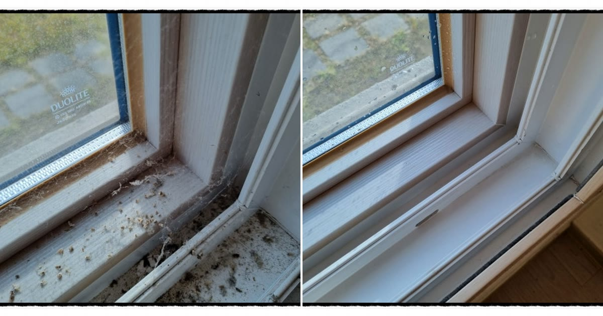
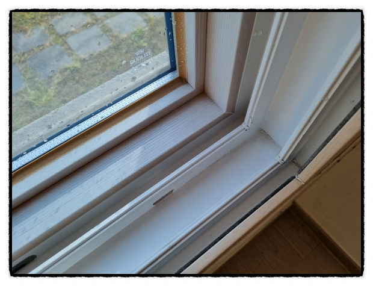
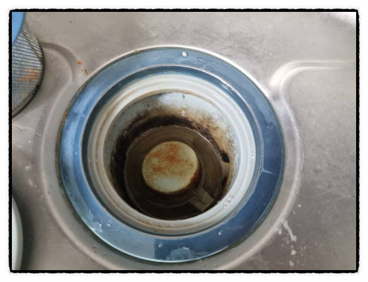
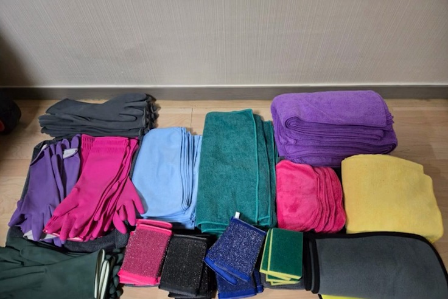

입주청소 업체 고르는 법, 계약 전에 이 5가지만 확인하세요

이사 날짜는 다가오는데, 업체는 너무 많고 어디를 믿어야 할지 막막하셨죠. 이런 걱정, 많이 하십니다.
입주청소를 직접 해 온 입장에서, 계약 전에 업체에 물어볼 것과 청소가 끝난 뒤 직접 확인할 곳을 정리했습니다. 어느 업체를 고르시든 도움이 되도록 썼습니다.
CHECK 1업체에 꼭 물어볼 5가지
견적 문자를 받으면 가격부터 보게 되지만, 아래 다섯 가지를 먼저 물어보세요. 답을 얼버무리는 업체라면 한 번 더 생각해 보셔도 좋습니다.
- 직접 일하는 팀인가요, 하청인가요?누가 오는지 모르면 청소 결과도 알 수 없습니다. 하청 없이 한 팀이 처음부터 끝까지 하는지 물어보세요.
- 걸레를 공간별로 나눠 쓰나요?화장실에서 쓴 걸레로 주방을 닦으면 깨끗해지지 않습니다. 구분해서 쓰는지가 위생의 기본입니다.
- 추가 비용은 언제, 어떻게 안내하나요?현장에서 갑자기 말하는 것이 아니라, 작업 전에 설명하고 동의를 받는지 확인하세요.
- 작업 과정을 사진·영상으로 보여 주나요?내가 보지 못하는 곳을 어떻게 청소했는지 확인할 수 있어야 합니다.
- 끝난 뒤 함께 확인하고, 문제가 생기면 A/S가 되나요?결제 전에 직접 보고, 나중에 발견한 문제도 처리해 주는지 물어보세요.
CHECK 2청소가 끝나면 직접 확인할 곳
눈에 잘 띄는 곳은 대부분 깨끗합니다. 차이가 나는 곳은 오히려 안 보이는 곳입니다. 청소 후에 아래 항목을 하나씩 확인해 보세요.
- 창틀 레일 모서리의 먼지와 이물질
- 붙박이장 안쪽 바닥과 선반 위
- 싱크대 하부장 배관 주변과 바닥
- 서랍 레일 서랍을 완전히 빼서 안쪽까지
- 몰딩 위와 문틀 틈새 손으로 한 번 쓸어 보기
- 후드 안쪽 기름때와 필터
- 욕실 줄눈과 배수구 곰팡이, 머리카락, 찌꺼기
- 전등 위와 환풍구 커버를 열어서 확인
 BEFORE
BEFORE
AFTER
BEFORE AFTER
AFTER청소가 끝나기 전에 업체가 연락을 주고, 그 자리에서 함께 확인하는 방식이 가장 정확합니다. 나중에 발견하면 말하기가 어렵습니다.
HOW WE WORK다하리는 이렇게 청소합니다
분리할 수 있는 건 모두 분리해서
전등 커버, 환풍구 커버, 후드 필터, 서랍처럼 떼어낼 수 있는 것은 모두 분리해서 청소합니다. 닦기만 해서는 닿지 않는 곳이 있기 때문입니다.
 BEFORE
BEFORE AFTER
AFTER걸레는 파트별로 나눠서
화장실, 주방, 거실처럼 공간마다 걸레를 따로 씁니다. 공간을 옮길 때는 걸레도 바꿉니다. 파트별로 색을 나눠 둔 걸레가 10개 이상 있습니다.

세제는 친환경 위주로
아이나 반려동물이 있는 집도 걱정이 없도록 친환경 세제를 위주로 씁니다. 마무리로 스팀 소독을 합니다.

PRICE비용과 추가금, 투명하게
천안·아산 신축 입주청소 기준 가격입니다. 아래 항목은 모두 기본에 포함됩니다.
| 공간 | 시작 금액 |
|---|---|
| 원룸 | 180,000원~ |
| 1.5룸 | 220,000원~ |
| 투룸 | 240,000원~ |
| 20평형 | 280,000원~ |
| 30평형 (붙박이장 내부 청소 포함) | 400,000원~ |
기본 포함: 기본 입주청소 · 수납장·전등 탈거 작업 · 스팀소독 · 1주일 A/S
오염도에 따라 변동될 수 있고, 현장 확인 후 최종 견적을 안내드립니다.
추가 작업이 필요하면 작업 전에 현장에서 먼저 설명드립니다. 고객님이 동의하신 경우에만 진행합니다.
청소 시간은 25평 기준 4~5시간, 30평 기준 5~6시간, 40평 이상은 6~8시간 정도 걸립니다. 오염도에 따라 달라질 수 있고, 작업이 끝나기 30분 전에 연락드립니다.
PROCESS진행은 이런 순서입니다
- STEP 1상담 및 견적 문의 — 평수, 주소, 희망일을 간단히 남겨 주세요.
- STEP 2정확한 견적 산정 — 평수와 공간 수 등 구체적인 정보를 바탕으로 안내합니다.
- STEP 3일정 확정 — 원하시는 날짜와 시간을 예약합니다. 예약금은 먼저, 잔금은 작업 후에 받습니다.
- STEP 4청소 진행 — 완료 30분 전에 연락드립니다.
- STEP 5확인 후 결제 — 직접 확인하신 뒤, 만족하셨을 때 결제하세요.
STORY대표가 직접 청소하는 이유
2019년에 부모님 이사 때문에 입주청소 업체를 처음 불러 봤습니다. 33평 집에 오신 분들이 걸레 몇 장으로 청소를 하셨고, 욕실에서 쓴 걸레로 다른 방까지 닦는 걸 보게 됐습니다. 결과는 만족스럽지 않았습니다.
어머니는 일하시는 분들께 더 요구하기 미안하다며 그냥 보내셨습니다. 그 뒤로 여러 업체를 써 봤지만 만족한 곳을 찾지 못했고, 그래서 직접 해 보기로 했습니다. 구석구석, 내 집처럼 청소하자는 마음으로 시작한 일입니다.
그때 세 가지를 약속했습니다. 걸레는 공간별로 나눌 것, 친환경 세제를 쓸 것, 과정을 사진과 영상으로 투명하게 보여 드릴 것. 지금도 그대로 지키고 있습니다.

2024년 4월 취득
FAQ자주 묻는 질문
추가금이 발생할 수 있나요?
오염도가 심하지 않을 시 모두 기본 작업으로 진행됩니다. 추가 금액이 발생할 경우 작업 전 현장에서 사전 안내하며, 고객님의 동의 없이는 진행하지 않습니다.
청소 시간은 얼마나 걸리나요?
25평 기준 4-5시간, 30평 기준 5-6시간, 40평 이상은 6-8시간 소요됩니다. 오염도에 따라 달라질 수 있으며, 완료 30분 전 연락드립니다.
주말이나 공휴일에도 가능한가요?
네, 주말·공휴일 작업 가능합니다. 다만 예약이 빠르게 마감되므로 최소 3-5일 전 예약을 권장드립니다.
천안·아산 전지역 가능한가요?
네! 천안, 아산 전지역 출장 가능합니다. 당일 출동도 가능하니 문의주세요.
페인트나 시멘트 자국도 제거되나요?
신축 입주청소의 경우 페인트·시멘트·실리콘 자국 제거가 기본 포함입니다. 다만 과도하게 심한 경우 추가 작업이 필요할 수 있으며, 이 경우 현장에서 사전 안내드립니다.
천안·아산 입주청소, 편하게 물어보세요
완료 30분 전 연락 → 직접 확인 → 만족 후 결제
꼭 저희를 선택하지 않으셔도 괜찮습니다. 비교해 보시는 데 이 글이 도움이 되셨으면 합니다.
전화 문의 시 현장 소음으로 통화가 어려울 수 있습니다.
문자 또는 카카오톡 메시지로 남겨주시면 빠르게 답변드립니다.